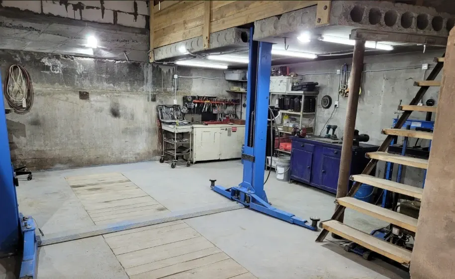
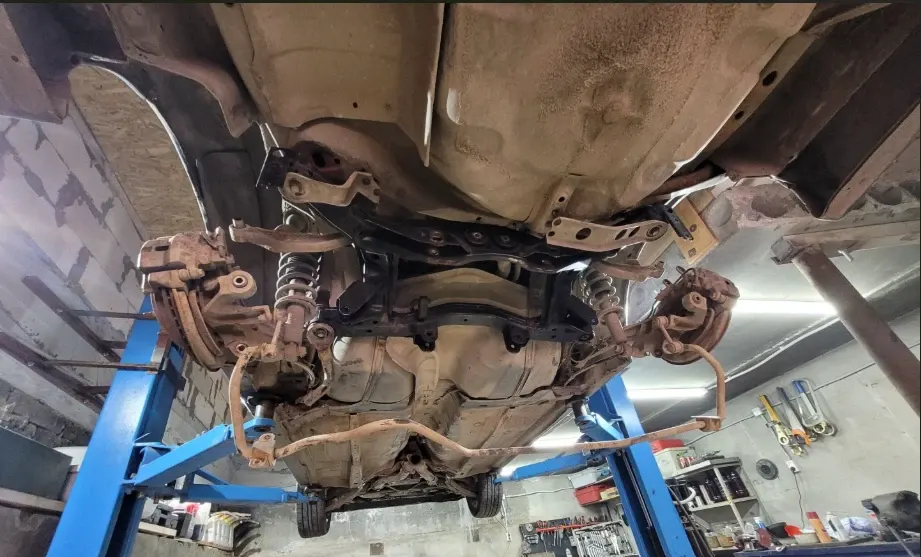
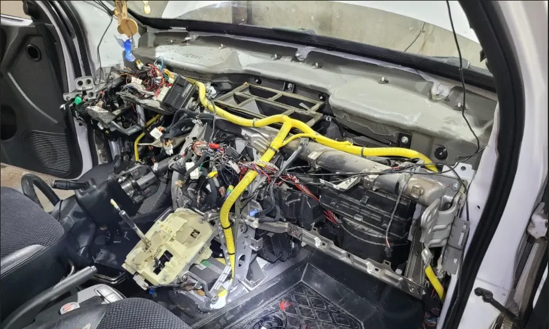

СТО SubAtom
Ремонт и обслуживание легковых автомобилей, замена ГРМ, ДВС и АКПП, ремонт ходовой части и промывка печки
- Рейтинг 5 в 2ГИС по 48 оценкам, 36 отзывов
- Новосибирск, улица Иванова, 50 к1, бокс 113
- Отзывы клиентов в 2ГИС с 2022 года

Как устроена работа
Входит
- Ремонт и обслуживание легковых автомобилей
- Замена ГРМ, ДВС и АКПП, ремонт ходовой части, промывка печки
- Мастер объясняет и показывает, что нашёл, – по отзывам
- Могут посоветовать и заказать запчасти – по отзывам
- Клиентская зона для ожидания – по отзывам
Отдельно, если нужно
- Итоговая цена зависит от автомобиля и объёма работ
- Стоимость называют при записи
Услуги и цены
Прайса на карточке в 2ГИС нет. Стоимость работ называют при записи, она зависит от автомобиля и объёма работ.
Основные работы
- Ремонт и обслуживание легковых автомобилейуточнить
- Замена ГРМуточнить
- Замена ДВСуточнить
- Замена АКППуточнить
- Ремонт ходовой частиуточнить
- Промывка печкиуточнить
По отзывам клиентов
- Замена ступичных подшипниковуточнить
- Замена резины и балансировкасезонная смена шинуточнить
- Диагностика автомобиляуточнить
Цены на карточке в 2ГИС не указаны – актуальную стоимость уточняйте при записи.
Четыре шага от записи до выдачи
- 01
Записались
Позвонили или написали в WhatsApp или ВКонтакте, назвали модель и что беспокоит.
- 02
Осмотр
Мастер смотрит автомобиль и называет, что нужно сделать.
- 03
Согласование
Называют стоимость работ и запчастей, вы решаете, что делать.
- 04
Выдача
Забираете автомобиль и рассказываете, что понравилось.


Что говорят клиенты
Без лишних работ
«Лишних работ не придумывает и ценник не ломит» – из отзыва в 2ГИС.
Быстро и качественно
«Всегда быстро, качественно, честно» – из отзыва в 2ГИС.
Объясняют и показывают
«По работам все показал и рассказал» – из отзыва в 2ГИС.
Возвращаются годами
«Нареканий к работе за 3 года не возникало» – из отзыва в 2ГИС.
Отзывы с 2ГИС
«Мастер знает свое дело, работает быстро и четко. Лишних работ не придумывает и ценник не ломит. Цены вменяемые. По работам все показал и рассказал.»
Владислав С · 3 сентября 2026
«Автомеханик Андрей - гений своего дела, лучший автосервис в Академгородке. Обслуживаюсь исключительно у него»
Дмитрий Габаджоба · 23 января 2025
«Осталась в полном восторге от сервиса! Приехала поменять резину и меня обслужили буквально на одном дыхании. Мастера очень вежливые и приятные,всё сделали невероятно быстро.»
Ирина. Р · 10 октября 2026
Отзывы с карточки в 2ГИС, дословно.
Частые вопросы
Как записаться?
Позвоните по телефону +7 983 322-20-28 либо напишите в WhatsApp или ВКонтакте.
Где вы находитесь?
Новосибирск, улица Иванова, 50 к1, гараж, бокс 113.
Какие работы вы делаете?
Ремонт и обслуживание легковых автомобилей, замена ГРМ, ДВС и АКПП, ремонт ходовой части, промывка печки.
Когда вы работаете?
График уточняйте по телефону при записи.
Запишитесь на удобный день
- Адрес
- Улица Иванова, 50 к1, бокс 113, Новосибирск
- Часы
- График уточняйте по телефону при записи
- Телефон
- +7 983 322-20-28